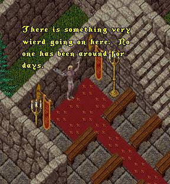
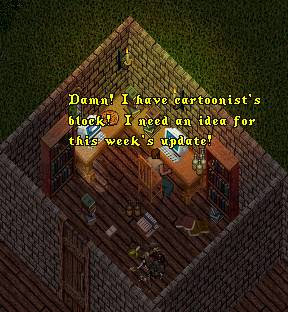
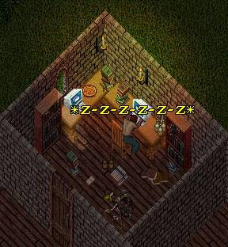
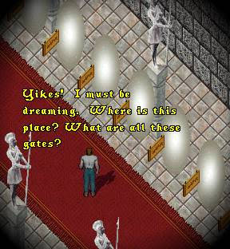
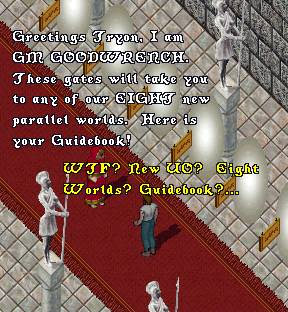
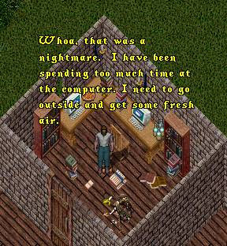
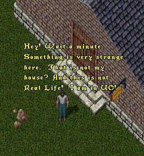
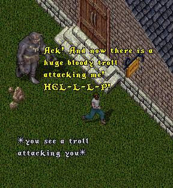

Episode 103: We're not in Kansas anymore, Toto! - Lately all the upcoming changes to UO have been filling my head my head up and making it difficult for me to focus on the 'toons. The other day I found myself staring at the screen daydreaming. This latest 'toon is a result of this. Hope you enjoy it.
As this episode opens we return to ImaNewbie
who is still chained to the wall in the convent
of the Sisterhood awaiting his fate. But wait!
Something funny is going on here. The Sisters
have not returned, no one is coming to rescue
him. In fact, there is a strange eerie silence.

Meanwhile back at his house in the Real
World, Tryon is sitting in front of his
computer feverishly trying to come up
with an idea for this week's update.


Tryon has fallen into a deep troubled sleep,
when all of a sudden he finds himself, seemingly
conscious, standing in a long hallway.


Eight Parallel Worlds? Click on the Playguide
elow to see what the GM is talking about. The
playguide opens in a separate browser window so
when you are finished looking at it just close
that window to return to the 'toons.
Jolted awake by the horror of reading the new
Playguide, Tryon heads outside to shake out the
cobwebs. But something is not quite right...


